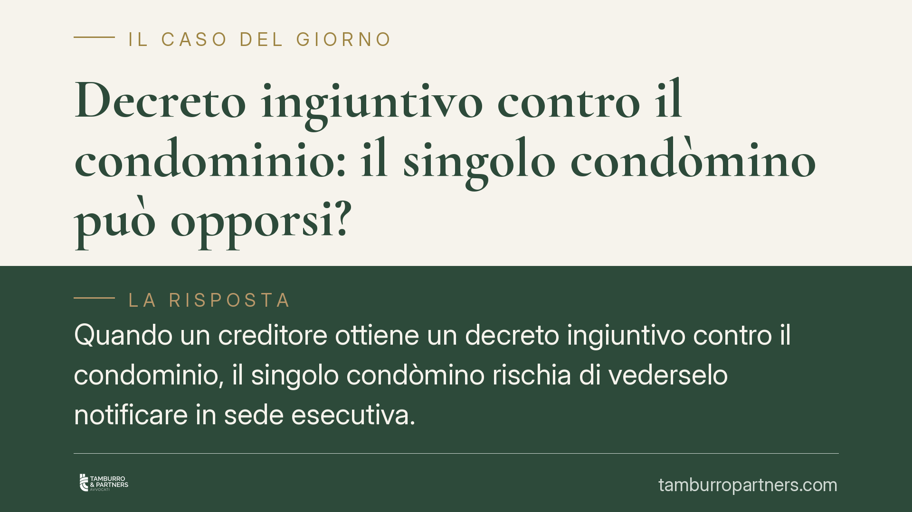

Decreto ingiuntivo contro il condominio: il singolo condòmino può opporsi?
Quando un creditore ottiene un decreto ingiuntivo contro il condominio, il singolo condòmino rischia di vederselo notificare in sede esecutiva. Può reagire e con quali strumenti? Il tema della sua legittimazione a opporsi è dibattuto. Facciamo chiarezza tra regole di rappresentanza dell'amministratore, responsabilità pro quota e mezzi di difesa concretamente attivabili.

Il caso
Un professionista o un fornitore vanta un credito verso il condominio per attività legate alla gestione delle parti comuni. Ottiene un decreto ingiuntivo e, in mancanza di pagamento, procede. A quel punto il singolo condòmino può ritrovarsi esposto in prima persona.
La domanda ricorrente è se quel condòmino possa opporsi al decreto o se debba limitarsi a difendersi nella fase esecutiva. La risposta non è scontata: si tratta di un tema su cui dottrina e giurisprudenza non sono allineate, e che va maneggiato con prudenza.
Inquadramento normativo
Il punto di partenza è l'art. 1131 c.c., che attribuisce all'amministratore la rappresentanza dei partecipanti nei limiti delle sue attribuzioni. Nelle controversie relative alla gestione delle parti comuni, è dunque l'amministratore (o chi legittimamente rappresenta il condominio) il soggetto destinatario del titolo.
Quanto alla responsabilità, va tenuta ferma una distinzione spesso confusa. La responsabilità per le obbligazioni condominiali è parziaria (Cass. Sez. Un. n. 9148/2008): ciascun condòmino risponde pro quota, in base ai millesimi, e non in solido per l'intero. Nei confronti del creditore opera inoltre il beneficio di preventiva escussione dei condòmini morosi previsto dall'art. 63, co. 2, disp. att. c.c.: il creditore deve prima agire verso i morosi e solo in caso di incapienza può rivolgersi a chi è in regola.
Sul piano processuale, la posizione del singolo condòmino rispetto ai giudizi che coinvolgono il condominio è stata ricostruita dalle Sez. Un. n. 10934/2019, che hanno valorizzato l'interesse del partecipante inciso nel proprio patrimonio. In questa prospettiva, l'orientamento prevalente tende a riconoscere al singolo una legittimazione concorrente a impugnare o intervenire quando il provvedimento è destinato a produrre effetti diretti sul suo patrimonio, proprio perché del debito egli risponde pro quota.
Resta però un'area di incertezza applicativa: la questione se e in quali limiti il singolo possa proporre opposizione a decreto ingiuntivo emesso contro il condominio è controversa, e conviene affrontarla valutando il caso concreto, la fase in cui ci si trova e i termini ancora disponibili.
Implicazioni pratiche
Per il condòmino questo significa che la difesa può muoversi su più piani, ciascuno con regole e scadenze proprie:
- Opposizione a decreto ingiuntivo (art. 645 c.p.c.): nel termine indicato nel decreto, per contestare l'esistenza o l'ammontare del credito. È la via più incisiva ma anche quella con legittimazione discussa in capo al singolo.
- Opposizione tardiva (art. 650 c.p.c.): possibile solo in casi circoscritti, quando non si è avuta tempestiva conoscenza del decreto per irregolarità della notifica, caso fortuito o forza maggiore.
- Opposizione all'esecuzione (art. 615 c.p.c.): quando il creditore agisce esecutivamente, per contestare il diritto a procedere, far valere la parziarietà e la propria quota millesimale, oppure eccepire che non sono stati prima escussi i morosi.
In pratica, anche dove la legittimazione a opporsi al decreto fosse negata, al condòmino restano strumenti effettivi per limitare la pretesa alla sola quota di sua spettanza.
Cosa fare in concreto
- Verificate subito la notifica e i termini. Individuate se è stato notificato il decreto, il precetto o un atto esecutivo: da questo dipende quale rimedio è ancora esperibile.
- Richiedete all'amministratore atti e documenti. Chiedete il titolo, i verbali di assemblea, i rendiconti e il piano di riparto per capire se il credito e la vostra quota sono corretti.
- Controllate la vostra quota millesimale. La responsabilità è pro quota: fate quantificare con precisione quanto può essere preteso da voi.
- Eccepite la preventiva escussione dei morosi quando ne ricorrono i presupposti, ai sensi dell'art. 63, co. 2, disp. att. c.c.
- Non lasciate decorrere i termini. Consigliamo di rivolgervi tempestivamente a un legale per scegliere lo strumento corretto tra opposizione al decreto, opposizione tardiva o opposizione all'esecuzione.
---
Contributo informativo a cura di Tamburro & Partners - Avv. Giuseppe Tamburro. Non costituisce parere legale.
Ogni condominio ha una storia a sé.
Se gestisci un'amministrazione e vuoi un confronto su una specifica questione condominiale, scrivi allo studio. Ti rispondiamo entro un giorno lavorativo.